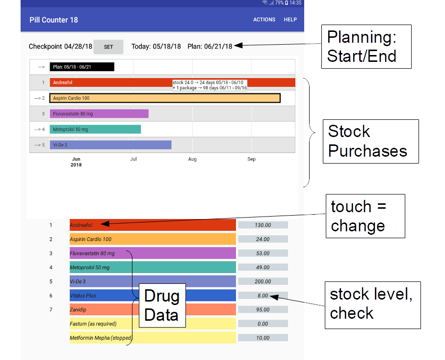
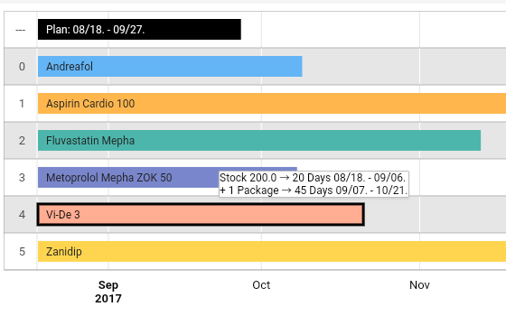
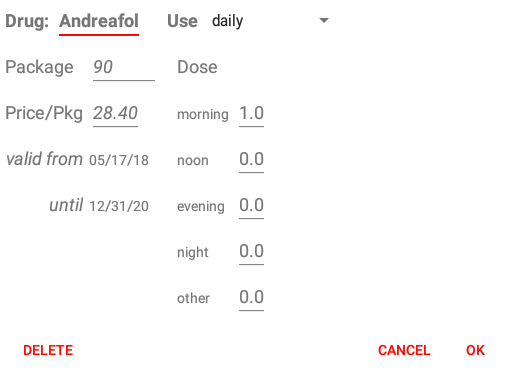

What and how much of my medications have to be procured?
Are the drugs regularly taken by prescription?
0) One week before the end of the planning period, the user receives a notification, a reminder to manage his medication.
1) The day date inventory provides the base for checks and planning.
2) The check is calculated on this way:
stock start
+ purchase
= sum
- target consumption
= target stock
- stock end
= difference
Different day times of the inventories checkpoint/today may cause differences of 1 daily doses.
Launch the check calculation by the button to the right of the drug name or by the menu for a list of all drugs.
3) Set checkpoint: today's actual stock inventories are stored with the day date.
4) Planning: the necessary purchases are calculated depending on
5) Purchases have to be booked in order to calculate a target stock . The procurement time must considered. If the pharmacy is visited every 4 weeks, a period of 5 weeks has to be planned.

Each activated drug gets a special color - the same in the schedule diagram as in the list of medicines, so you can immediately see what belongs together. Yellow: the app does not handle the drug because it is not yet ingested or discontinued; only taken as needed; and if the intake is not daily.
This is a timeline diagram. It shows stocks and necessary purchases. Tapping a bar displays planning details.

Tapping a drug name displays the update screen.
The date "valid from" must be entered in order to have the app manage a drug. The package size has to be greater than 0.

You can use "Share" to transfer the lists to another app. For printing, E-mail, storage.
The user is responsible for correct data. Any liability for consequential damages resulting from the use of the app is rejected.
The app uses Google schedule diagrams. That puts a Internet connection. Graph data are sent over the network, But not stored in the cloud.